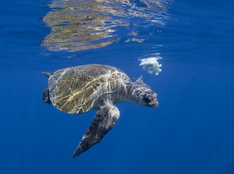
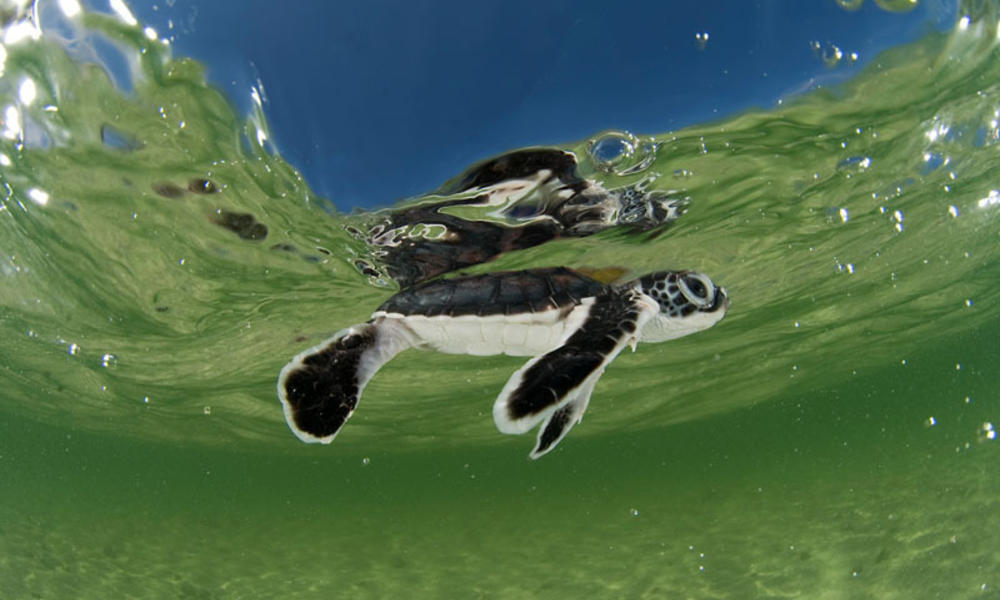
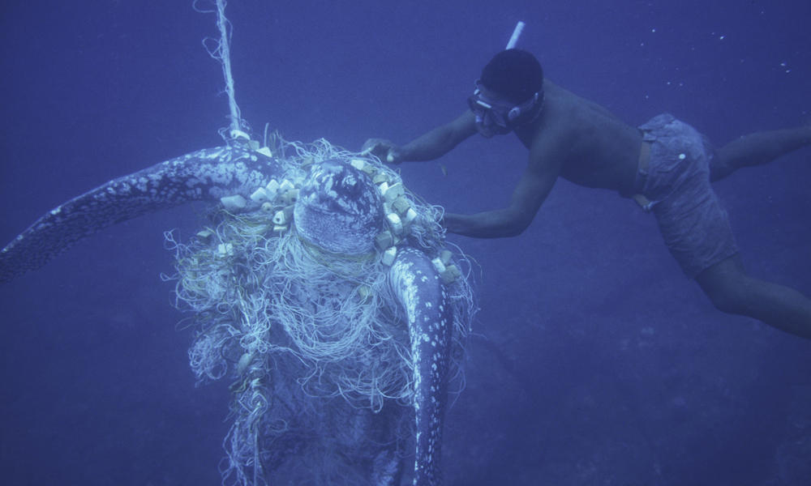
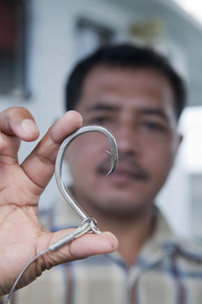
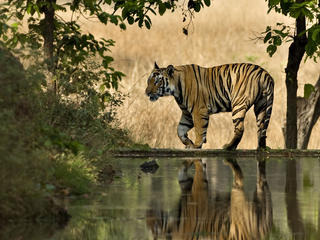
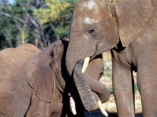
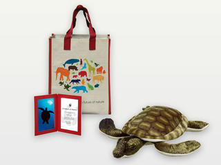

Saving wildlife is at the core of WWF’s mission. Why? Because animal populations are disappearing at an alarming rate. But even in the face of threats like poaching, habitat loss and overuse of natural resources, WWF is creating a better future for wildlife every day. Protecting these species also contributes to a thriving, healthy planet for people’s health and well-being—from forests that slow climate change and filter water to oceans that provide more than one-sixth of the world’s food.


For more than 100 million years sea turtles have covered vast distances across the world's oceans, filling a vital role in the balance of marine habitats.
Seven different species of sea (or marine) turtles grace our ocean waters, from the shallow seagrass beds of the Indian Ocean, to the colorful reefs of the Coral Triangle, and even the sandy beaches of the Eastern Pacific. WWF’s work on sea turtles focuses on five of those species: green, hawksbill, loggerhead, leatherback and olive ridley.
Human activities have tipped the scales against the survival of these ancient mariners. Nearly all species of sea turtle are classified as Endangered. Slaughtered for their eggs, meat, skin and shells, sea turtles suffer from poaching and over-exploitation. They also face habitat destruction and accidental capture in fishing gear. Climate change has an impact on turtle nesting sites. It alters sand temperatures, which then affects the sex of hatchlings.
WWF is committed to stop the decline of sea turtles and work for the recovery of the species. We work to secure environments in which both turtles—and the people that depend upon them—can survive into the future.

FUNDAMENTAL LINK IN MARINE ECOSYSTEMS
Sea turtles are a fundamental link in marine ecosystems. They help maintain the health of sea grass beds and coral reefs that benefit commercially valuable species such as shrimp, lobster and tuna. Sea turtles are the live representatives of a group of reptiles that have existed on Earth and traveled our seas for the last 100 million years. Turtles have major cultural significance and tourism value.

Sea turtles journey between land and sea and swim thousands of ocean miles during their long lifetimes, exposing them to countless threats. They wait decades until they can reproduce, returning to the same beaches where they were born to lay their eggs, few of which will yield hatchlings that survive their first year of life. Beyond these significant natural challenges, sea turtles face multiple threats caused by humans.
OVERHARVESTING AND ILLEGAL TRADE
Sea turtles continue to be harvested unsustainably both for human consumption and trade of their parts. Turtle meat and eggs are a source of food and income for many people around the world. Some also kill turtles for medicine and religious ceremonies. Tens of thousands of sea turtles are lost this way every year, devastating populations of already endangered greens and hawksbills.
Killing of turtles for both domestic and international markets continues as well. While international trade in all sea turtle species and their parts is prohibited under the Convention on International Trade in Endangered Species of Wild Fauna and Flora (CITES), illegal trafficking persists.
HABITAT LOSS
Sea turtles are dependent on beaches for nesting. Uncontrolled coastal development, vehicle traffic on beaches and other human activities have directly destroyed or disturbed sea turtle nesting beaches around the world. Turtle feeding grounds such as coral reefs and sea grass beds are damaged and destroyed by activities onshore, including sedimentation from clearing of land and nutrient run-off from agriculture.
CLIMATE CHANGE
All stages of a sea turtle’s life are affected by environmental conditions such as temperature—even the sex of offspring. Unusually warm temperatures caused by climate change are disrupting the normal ratios, resulting in fewer male hatchlings.
Warmer sea surface temperatures can also lead to the loss of important foraging grounds for sea turtles, while increasingly severe storms and sea level rise can destroy critical nesting beaches and damage nests.

WWF works around the world to eliminate sea turtle bycatch from fisheries, reduce the unsustainable harvest and illegal trade in marine turtles, and stem the loss of critical sea turtle habitats.
ELIMINATING BYCATCH
WWF aims to reduce turtle bycatch by working with fisheries to switch to more turtle-friendly fishing hooks (“circle” hooks). We advocate for the use of special turtle excluder devices in nets. WWF runs an international competition, known as Smart Gear, to attract creative new ways to solve bycatch problems and to advance the best of those ideas. Winning devices have been designed to minimize the bycatch of turtles on tuna longlines and help turtles avoid gillnets. We track turtle movements using satellites to help prevent future interactions between fisheries and turtles and work with fishermen to help them save turtles caught in fishing gear.
ADDRESSING OVERHARVESTING AND ILLEGAL TRADE
WWF works with local communities to reduce turtle harvesting and egg collection. Because exploitation of turtles is often driven by a lack of economic choices, we help develop alternative livelihoods so that local people are no longer dependent on turtle products for income. WWF also supports programs that promote the value of sea turtles. WWF works through TRAFFIC, the wildlife trade monitoring network, to stop the illegal trade of turtle meat and eggs. We also train and equip local rangers to patrol turtle nesting beaches and protect against poaching.
WWF has been supporting a campaign led by TRAFFIC to combat illegal trade from the Coral Triangle and reduce demand in China. Activities include better training for law enforcement officials in both areas and a public awareness campaign in China, targeting areas where turtle trade is the highest. Radio broadcasts and advocacy events spread the message among local fishermen, souvenir shop owners and tourists about the problem of turtle trade.
In the western Solomon Islands, WWF supports local rangers on the beaches throughout turtle nesting and hatching seasons to protect against egg harvesting and hunting. The rangers collect important data and inform their communities about laws to protect turtles.
PROTECTING MARINE TURTLE HABITAT
WWF works around the world to establish marine protected areas, ensuring sea turtles have a safe place to nest, feed and migrate freely. We encourage governments to strengthen legislation on, and provide funding for, sea turtle protection. WWF supports local turtle conservationists in many parts of the world to monitor and patrol turtle nests. These efforts often lead to ecotourism opportunities and offer alternative livelihoods.
MINIMIZING CLIMATE CHANGE IMPACTS
WWF studies how sea turtles are being affected by climate change and helps determine the best ways to reduce their vulnerability to changing environmental conditions. We work around the world with communities to monitor and protect nesting beaches, helping turtles be more resilient to the future impacts of climate change. In the Eastern Pacific and Caribbean we work to raise awareness of the threat of sea level rise on nest sites and the importance of shade for nests.
SATELLITE TRACKING
Satellite telemetry allows researchers to track sea turtles as they swim from place to place. These satellite tags do not harm the turtles in any way and are designed to eventually fall off. The data will tell us where important feeding areas are, help us understand migration patterns, and anticipate where turtles may come in contact with fisheries and their gear.

TAKE ACTION
Urge your members of Congress to support international conservation and climate change programs in the federal budget.

STAY CONNECTED
Get the latest wildlife news and conservation updates sent to your inbox with our monthly e-newsletter.

ADOPT A TURTLE
Make a symbolic turtle adoption to help save some of the world's most endangered animals from extinction and support WWF's conservation efforts.